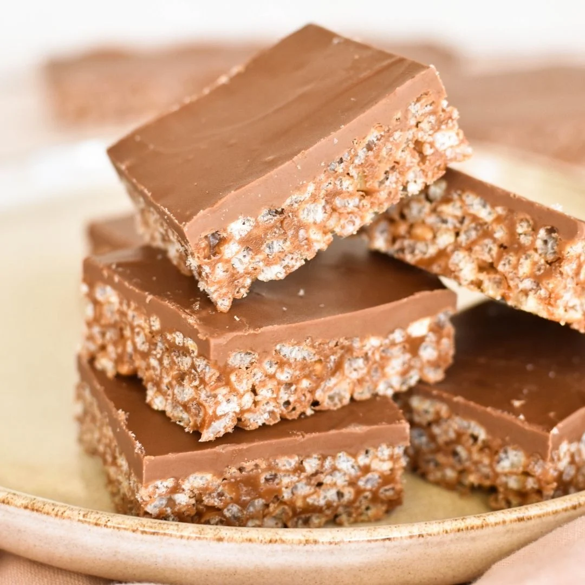

Recipe for Mars Bar Slice

Irresisttible Caramel and Nougat Mars Bar Slice
Indulge your sweet tooth with this irresistible Mars Bar Slice,
a heavenly treat that combines the luscious flavors of caramel,
chocolate, and nougat in every bite. This no-bake delight is a
breeze to whip up, making it the perfect go-to recipe for satisfying
your dessert cravings in no time.
Ingredients
- 5 Mars Bars
- 1/2 cup unsalted butter
- 4 cups rice bubbles
- 200g milk chocolate, chopped
optional:
- a pinch of salt for added flavour
Method
- Line a square or rectangular baking pan with parchment paper.
- In a heatproof bowl, melt the Mars Bars and butter together.
You can use a microwave or a double boiler for this step, stirring
until smooth.
- In a large mixing bowl, combine the melted Mars Bars and butter
mixture with the crispy rice cereal. Mix until the cereal is evenly
coated.
- Press the mixture firmly into the prepared baking pan, ensuring an
even layer.
- In a separate heatproof bowl, melt the milk chocolate.
Pour the melted chocolate over the Mars Bar and cereal mixture,
spreading it evenly with a spatula.
- Place the pan in the refrigerator and let it chill for at least
2 hours, or until the chocolate has set.
- Once set, remove from the refrigerator and let it come to room
temperature for a few minutes. Then, using a sharp knife, cut
into squares or bars.
- Serve and enjoy your delicious Mars Bar Slice! Store any leftovers
in an airtight container in the refrigerator.
Feel free to customize the recipe by adding nuts, dried fruit, or other
mix-ins of your choice for an extra layer of flavor and texture.